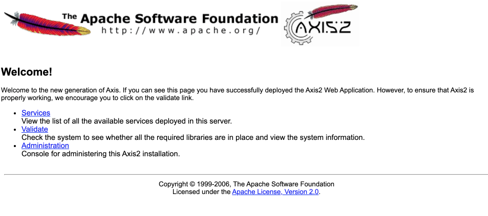

for learning, and playing around there is nothing better than having a separate VM that you can break. This can be either an instance in a cloud provider or a virtual machine @ localhost. On your working station you can use a docker container with an ubuntu image or https://multipass.run/. Multipass is a great way to instantiate Ubuntu VMs and runs on Linux, Mac and Windows. it's made by the Ubuntu team highly optimized.
In this Codelab we will learn how to spin a machine on Multipass and run easytravel and the Dynatrace OneAgent in there.
| |
|
|
Recommended | ⦿ |
Optional | ○ |
Download & Install Multipass on your OS
Download multipass and install it depending on your OS https://multipass.run/
Show the help
multipass -h
Create a VM with x size
multipass launch --name <vm-name> --mem 4G --disk 10G --cpus 2
## e.g. for easytravel
multipass launch --name easytravel --mem 4G --disk 10G --cpus 2
Start the VM
multipass start <vm-name>
## e.g. for easytravel
multipass start easytravel
Shell into the VM
you can also shell into the vm with the ip but you need to set a password for the user ubuntu and enable password on the SSH service
multipass shell <vm-name>
## e.g. for easytravel
multipass shell easytravel
Stop the VM
multipass stop <vm-name>
## e.g. for easytravel
multipass shell easytravel
List your VMs
multipass list
For the best experience we recommend that you enable Dynatrace monitoring.
By only providing your Dynatrace credentials the script will install the OneAgent OneAgent Operator
If you don't have a Dynatrace tenant yet, sign up for a free trial or a developer account.
Get a PaaS Token for the OneAgent
We will install the Dynatrace OneAgent programatically, for this we need a PaaS token.
Log in to your Dynatrace tenant and go to Settings > Integration > Platform as a Service. Then, create a paas token and save it since we will use it for installing the oneagent later.
Download install script
Download help script to install Easytravel, Nginx, Docker and other utils
wget https://raw.githubusercontent.com/dynatrace-perfclinics/why-devs-love-dynatrace/main/easytravel/ubuntu-setup-easytravel.sh
Add your Dynatrace credentials
## Set DT_TENANT_URL and API TOKEN
# ---- Define Dynatrace Environment ----
# Sample: https://{your-domain}/e/{your-environment-id} for managed or https://{your-environment-id}.live.dynatrace.com for SaaS
DT_TENANT_URL=
DT_PAAS_TOKEN=
Make it executable
chmod +x ubuntu-setup-easytravel.sh
Execute the script
sudo bash ubuntu-setup-easytravel.sh -i
The command needs sudo rights for installing also utils as docker so you can spin containers in an instant. The script will install easytravel, start it and it will also install the BankJob (a java app for learning how the basline of Davis works) and an NGINX reverse proxy that routes the traffic of all the EasyTravel apps to HTTP. Using a magic ip and subdomains all easytravel apps will be exposed.
Why run it in the background and where is the output of the program you say? Well, this script is actually optimized to be executed for non-interactive shells at the initialization of an instance. This is done programatically passing the script as user data while creating dynatrace environments and spininning multiple instances for each student. This is achieved with the Dynatrace Rest Tenant Automation programm. Yes, we love ❤️ automation 🤖and the customization, creation and configuration of environments and instances is done programatically.
🔍Inspect the script at runtime
This is optional just for you to know where the output of Easytravel is being piped out. Each Easytravel component writes is logs. You can check them on the Admin console of Easytravel
To inspect how the installation is going, type
less +F /tmp/easytravel-install.log
This will open the installation log and read from the input stream. To exit just type CTRL + C and then quit.
A complete installation looks like this:
.
..
[EasyTravel-Installation|INFO] [2021-03-30 11:36:01] |>->-> Configuring EasyTravel Memory Settings, Angular Shop and Weblauncher. <-<-<|
***EasyTravel launched**
Tue Mar 30 11:36:01 UTC 2021
installation done
[EasyTravel-Installation|INFO] [2021-03-30 11:36:01] |======================================================================
[EasyTravel-Installation|INFO] [2021-03-30 11:36:01] |============ Installation complete :) ============
[EasyTravel-Installation|INFO] [2021-03-30 11:36:01] |______________________________________________________________________
[EasyTravel-Installation|INFO] [2021-03-30 11:36:01] |>->-> It took 3 minutes and 1 seconds <-<-<|
Verify the log of the running Easytravel App
less +F /tmp/weblauncher.log
Check running containers
Docker is installed on the system. There are two running containers, one is a java app called "BankJob" another is nginx working as a reverse proxy for multiple endpoints of Easytravel
docker ps
stop all containers
docker stop reverseproxy bankjob
start all containers
docker start reverseproxy bankjob
The load generation for EasyTravel is defined in the easyTravelConfig.properties file which is setted up during the installation. The properties starting with config.baseLoad.. are the ones defining these values (changed at installation). Also you can manage set this values manually by accessing the http://easytravel/admin interface and moving the slider manually.
By default at installation the script will fill the DOMAIN variable with curl ifconfig.me to get the public IP since easytravel classic has some 3rdparty content servers where you can analyze with the RUM capabilities of Dynatrace the impact of 3rd party resources.
http://127.0.0.1.nip.io

http://classic.127.0.0.1.nip.io
http://admin.127.0.0.1.nip.io

http://classic.127.0.0.1.nip.io/amp

http://rest.127.0.0.1.nip.io

Internal REST Services of EasyTravel as well as a the Configuration REST Service to activate/deactivate feature flags, problem patterns and deployments remotely.
Kill all processes
ps -ef | grep -i easytravel | awk '{print "sudo kill -9 "$2}' | sh
Start easyTravel as UBUNTU (not root)
If you happen to install easytravel as root, you might want to change recursively all the rights of the easytravel installation folder so all processes can run properly
sudo bash ubuntu-setup-easytravel.sh -s
Fix easyTravel rights
chmod 755 -R /home/ubuntu/easytravel-2.0.0-x64/
Fix easyTravel ownership
chown ubuntu:ubuntu -R /home/ubuntu/easytravel-2.0.0-x64/
Check if there are running easytravel leftovers (processes)
ps -aux | grep -i easytravel
Restart all with a one-liner (must be root)
sudo bash ubuntu-setup-easytravel.sh -k
Disable monitoring of launcher
For RUM to work properly (for the classic app e.g. Loadgenerator) you need to disable deep monitoring for the weblauncher process.
On the entity select edit...
Then disable monitoring for that process group instance...
easyTravel documentation
https://confluence.dynatrace.com/community/display/DL/easyTravel